My Introduction
My name is Raju Yadav, and I come from a village called Kotiya Nayak, located in Gola Block of Gorakhpur District, Uttar Pradesh, India. I was born on 20 August 1998 and belong to a humble middle-class family. My roots, family values, and life experiences have played an important role in shaping the person I am today.
One of the most respected figures in my family was my late grandfather, late Ramswaroop Yadav, who was a wrestler. His legacy remains a meaningful part of my family history and inspires me to value strength, dedication, and perseverance.
My educational journey began in my home village, where I completed my primary education. I later continued my studies from Class 9 to Class 12 at a college outside my village. With a desire to pursue higher education and build a better future, I moved to Gorakhpur, leaving behind the comfort of my hometown to explore new opportunities.
My journey eventually led me to pursue postgraduate studies through institutions in Gorakhpur and Farrukhabad, Uttar Pradesh, where I completed my master's degree.
Coming from a middle-class background has taught me the importance of hard work, patience, and continuous learning. I believe that our beginnings do not define our limits; rather, our dedication, decisions, and determination shape our future.
Through this website, I want to share my personal journey, educational background, memories, photographs, family history, and future experiences. This website is a small effort to preserve my story and keep adding new chapters as life unfolds.
Thank you for visiting my website and becoming a part of my journey!
About Me
Full Name: Raju Yadav
Date of Birth: 20 August 1998
Father: Diwakar Yadav
Mother: Jiyaksha Devi
Grandfather: Late Ramswaroop Yadav
Address: Kotiya Nayak, Gola, Gorakhpur, Uttar Pradesh, India - 273408
My Education
Master of Computer Applications (MCA)
University: Major SD Singh University, Farrukhabad (UP)
Passing Year: 2026
Bachelor of Computer Applications (BCA)
University: DDU
College: ITM Gida, Gorakhpur (UP)
Year of Passing: 2022
My Photo Gallery
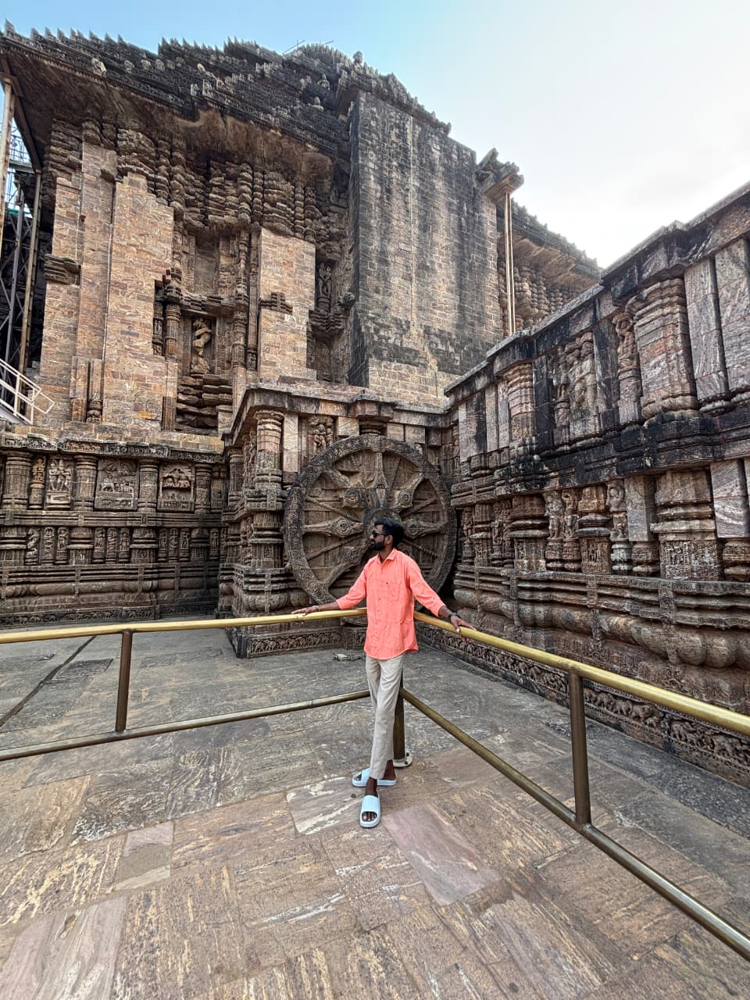
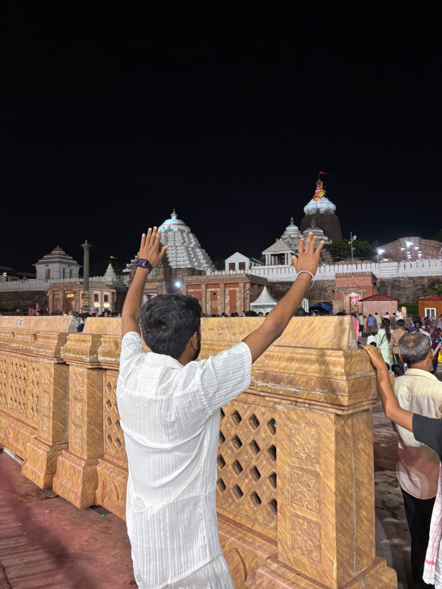
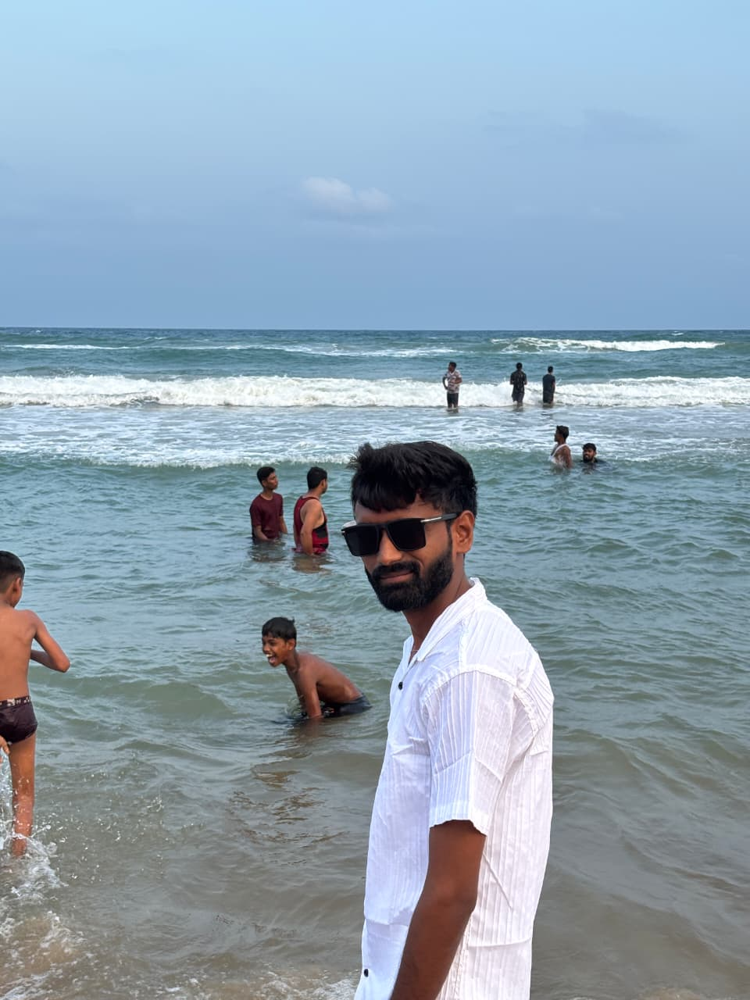
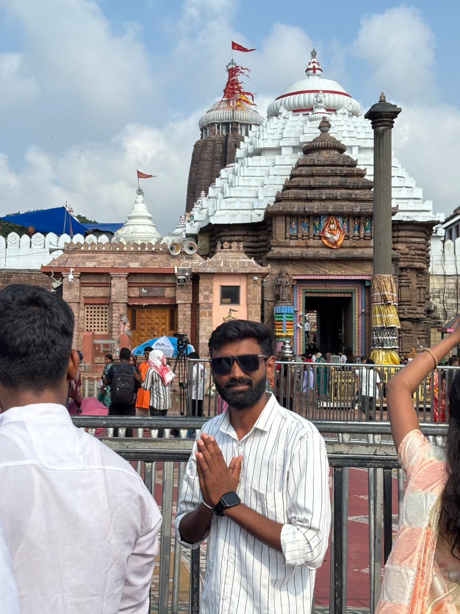
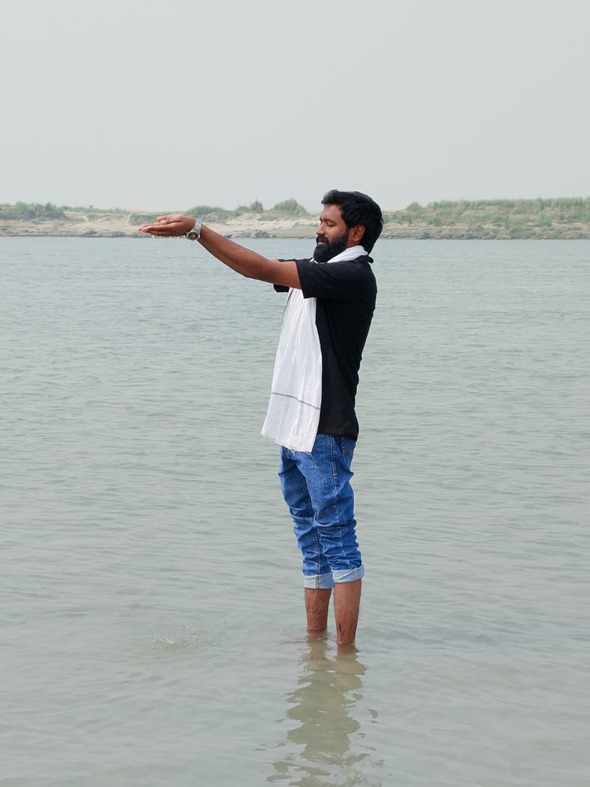
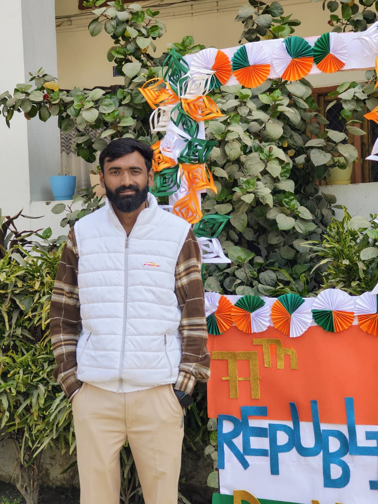
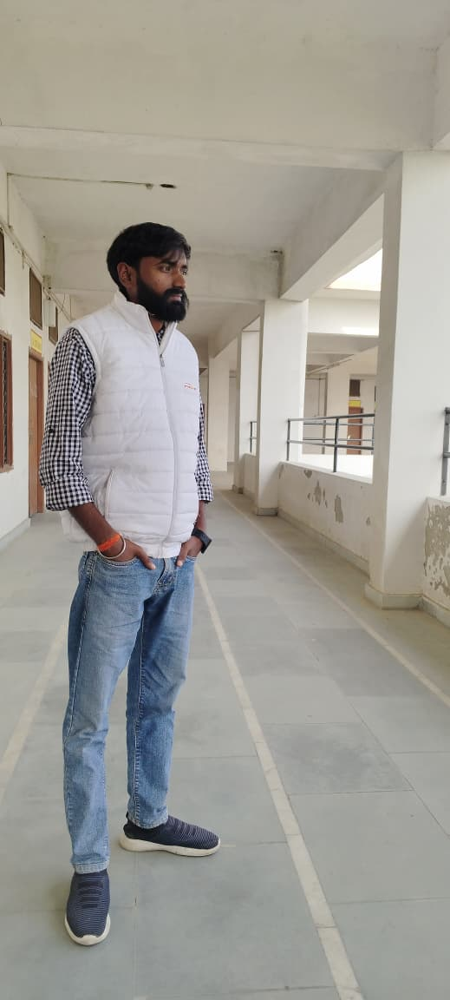
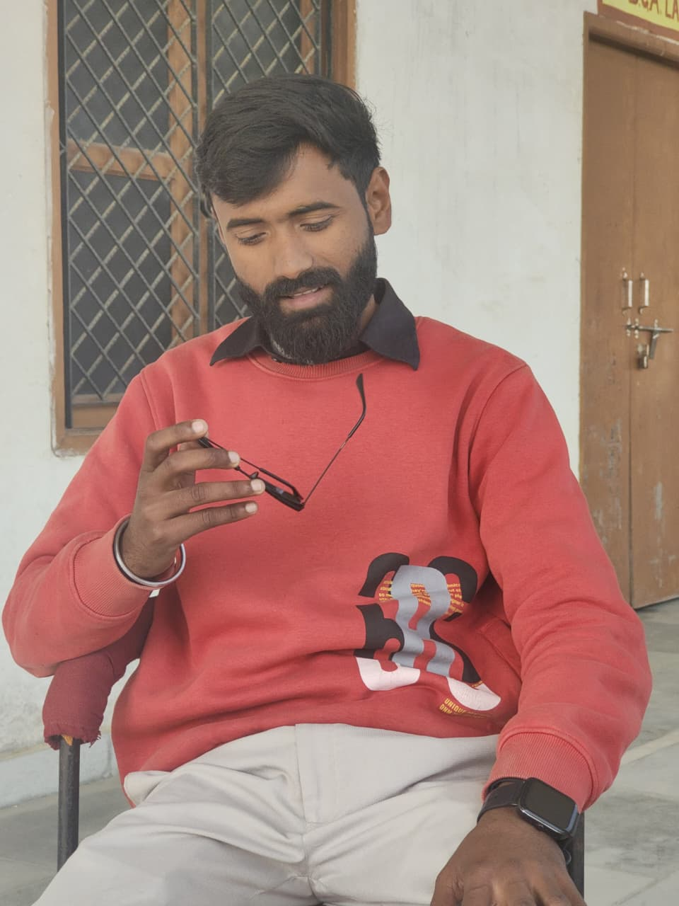
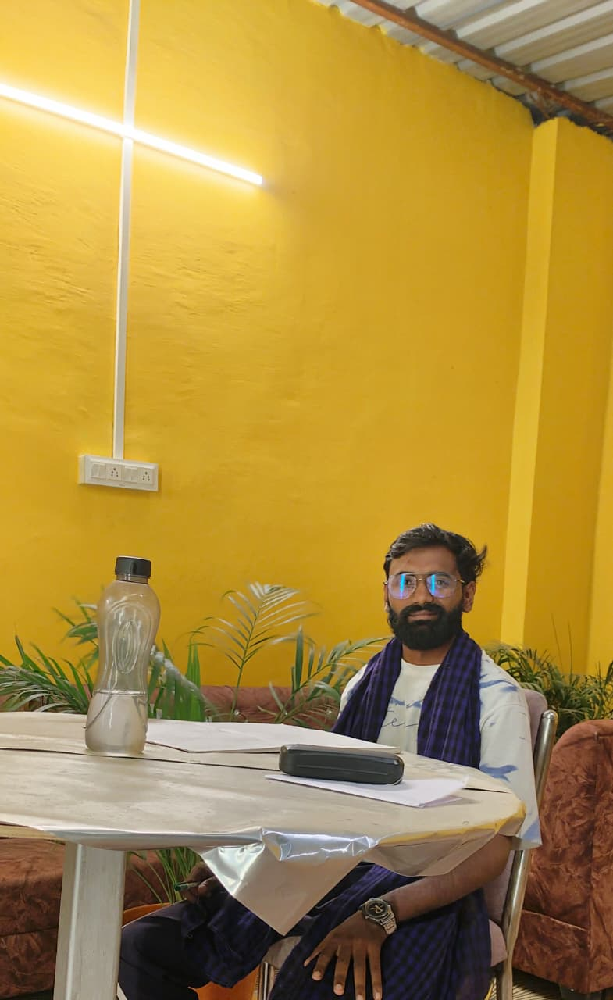
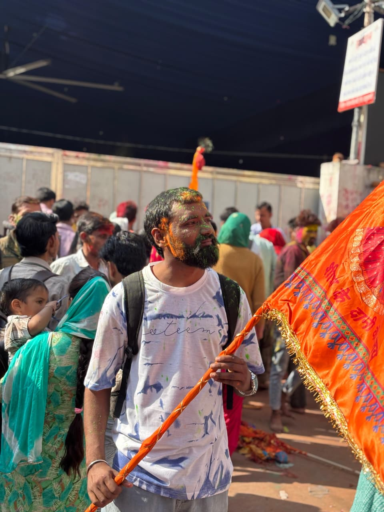
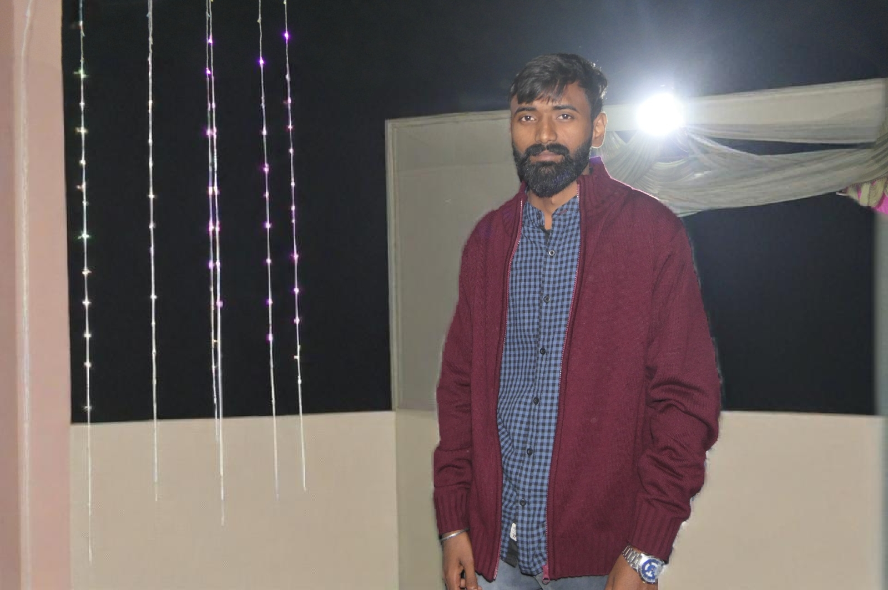
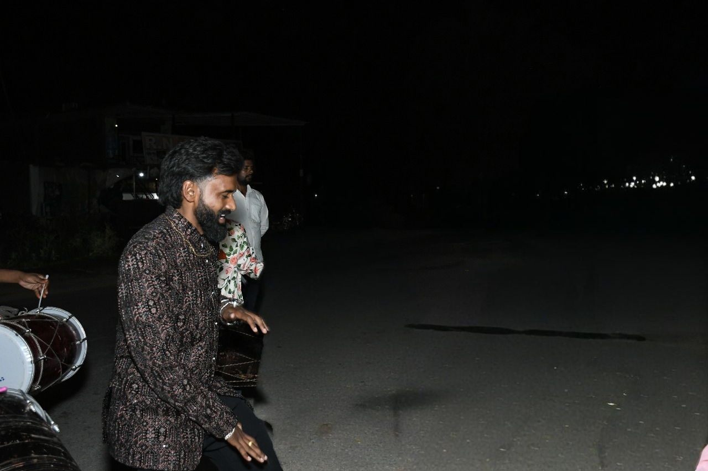
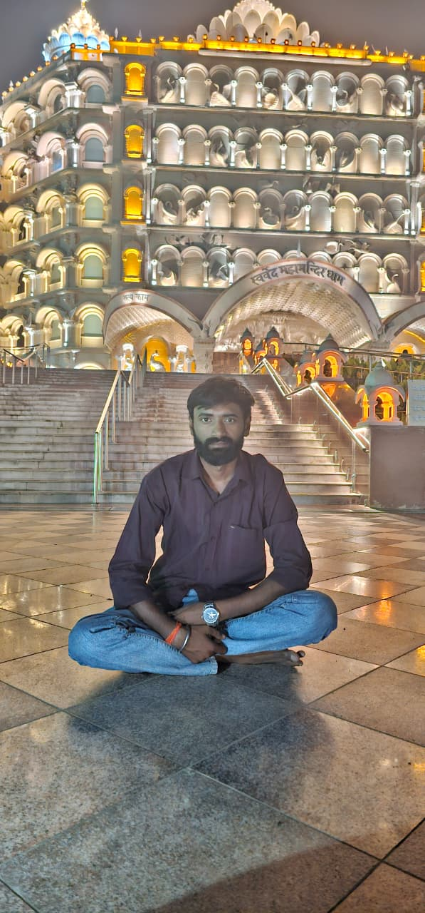
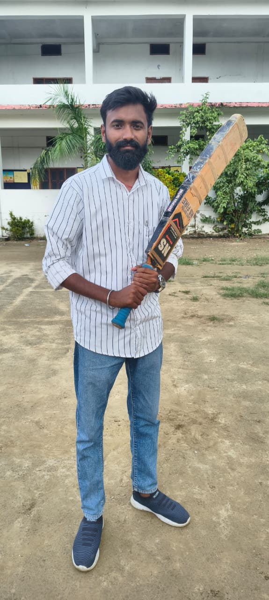
Connect With Me
Follow me on my social media platforms.